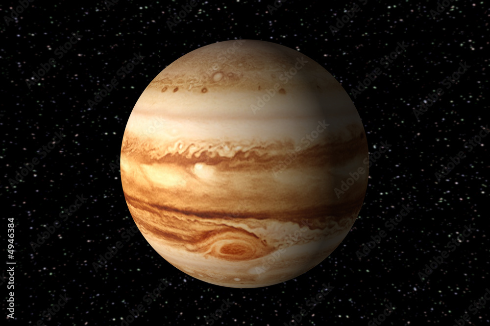

click to open index page
click to open page2
S0LAR SYSTEM
- OVERVIEW
- The solar system has one star, eight planets, five dwarf planets, at least 290 moons, more than 1.3 million asteroids, and about 3,900 comets. It is located in an outer spiral arm of the Milky Way galaxy called the Orion Arm, or Orion Spur. Our solar system orbits the center of the galaxy at about 515,000 mph (828,000 kph). It takes about 230 million years to complete one orbit around the galactic center

STRUCTURE & COMPOSITION
The solar system consists of the Sun which is an average star in the Milky Way Galaxy & we have bodies orbiting around it: 8 (formerly 9) planets with certain known planetary satellites (moons); countless asteroids, some of which have their own satellites; comets & other icy bodies; & vast reaches of highly tenuous gas & dust known as the interplanetary medium.
The sun is located at the center of the solar system & it influences the motion of all the other bodies through its gravitational force The planets, in order of their distance outward from the Sun, are Mercury, Venus, Earth, Mars, Jupiter, Saturn, Uranus, & Neptune.
ORIGIN
Edwin Hubble, an American astronomer, discovered that universes are flying away from one another & it looked like chunks of celestial shrapnel in the effects of the titanic surge- Big Bang.
Big Bang Theory reveals that the overall matter in the Universe came into life around 13.8 billion years ago. At the same time, the matter was consolidated into an incredibly tiny ball with vast consistency & intense heat labeled Singularity.
PLANETS in our solar system
here are totally 8 planets in our solar system .Initially 9 . PLUTO
, the 9th planet is now considered as dwarf on
- The 8 planets of our solar system are:
- Mercury
- Venus
- Earth
- Mars
- Saturn
- Jupiter
- Uranus
- Neptune
- 1 MERCURY:
- It is the smallest planet in the solar system
It is closest to the sun
Completes one revolution in the shortest amount of time 88 days, to be precise 88.97 days.Its size is marginally greater than that of the Earth’s moon.
- 2 VENUS:

- Second brightest object visible from Earth
Rotates on its axis in 243 Earth days, taking 224.7 Earth days to complete 1 revolution (maximum time period taken by any planet to complete 1 rotation). Except Uranus, it rotates counterclockwise to all other planets (from West to East).
- 3 EARTH:
- Only planet known to support life & is located third from the Sun.
Earth is approximately 4.5 billion years old.
- 4 MARS:

- Second-smallest planet in the solar system
Due to the presence of iron oxide, Mars is crimson in colour & is known as the “red planet”.
- 5 JUPITER:

- Biggest planet of all & is located five planets away from the Sun.
Amongst the brightest objects in the sky which can be seen with the naked eye.
- 6 SATURN:
- Second-largest planet in the solar system & the sixth planet from the Sun.
A massive gas planet with an average radius nine times that of the Earth.
- 7 URANUS:
- Third-largest planet by radius & the fourth-largest planet by mass.
Seventh planet from the Sun.
Also known as the “ice giant”
- 8 NEPTUNE:
- The Solar System’s farthest planet
third-most massive, densest,
In terms of diameter, Neptune is the fourth-largest planet in the Solar System.
MYTH - Earth is closer to the sun in the summer